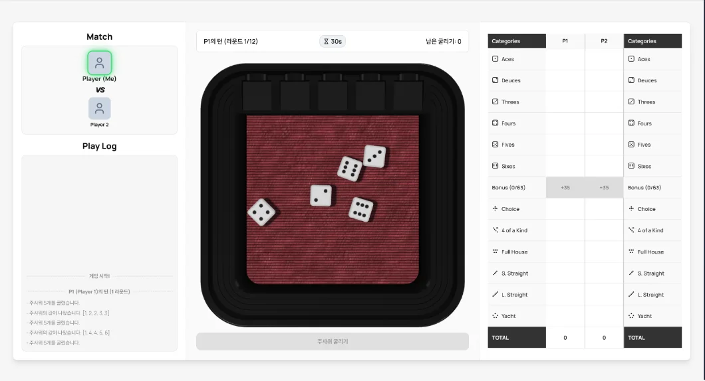
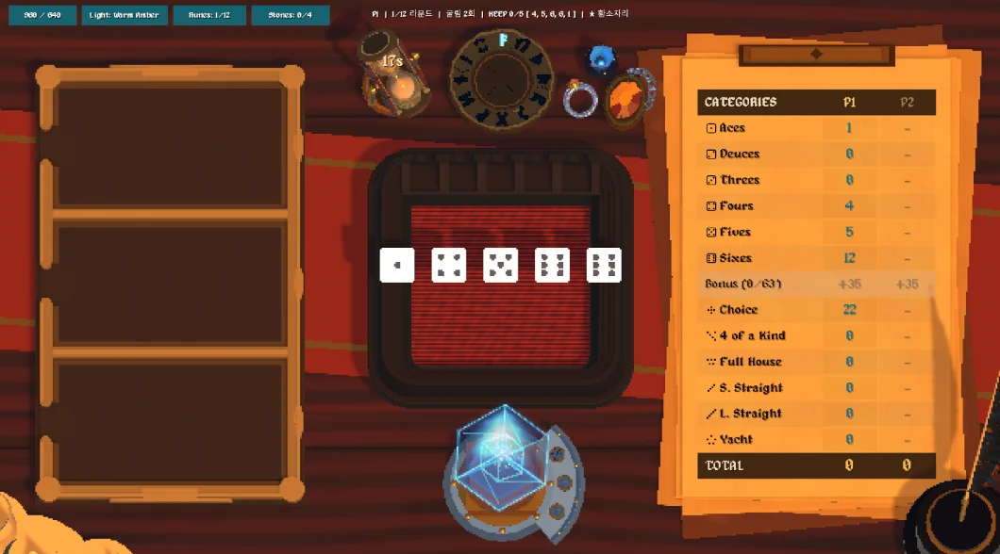

프로젝트
2026.07.01 첫 커밋 이후 커밋 110개. 1·6·9턴마다 증강 3택 1을 고르는 2인 대전이고, 클래식 4인전도 지원합니다. 6자리 PIN으로 방을 만들어 바로 붙는 실시간 멀티플레이입니다.
클래식 요트 다이스의 족보 규칙 위에 증강 55종을 얹은 2인 대전 게임입니다. 웹 실시간 멀티플레이로 룰을 다듬었고, 지금은 같은 룰을 Unity 6 3D 테이블탑(Tessera)으로 옮기고 있습니다. 기획부터 구현까지 혼자 맡았습니다.


2026.07.01 첫 커밋 이후 커밋 110개. 1·6·9턴마다 증강 3택 1을 고르는 2인 대전이고, 클래식 4인전도 지원합니다. 6자리 PIN으로 방을 만들어 바로 붙는 실시간 멀티플레이입니다.
김예찬 기획 · 시스템 설계 · 개발 (1인)
증강 카드 55종, 서버 권위 구조, 주사위 연출 동기화, Unity 이식 구조
카드 기획, 서버 권위 구조, 주사위 결과 동기화. 눌러서 펼쳐 보세요.